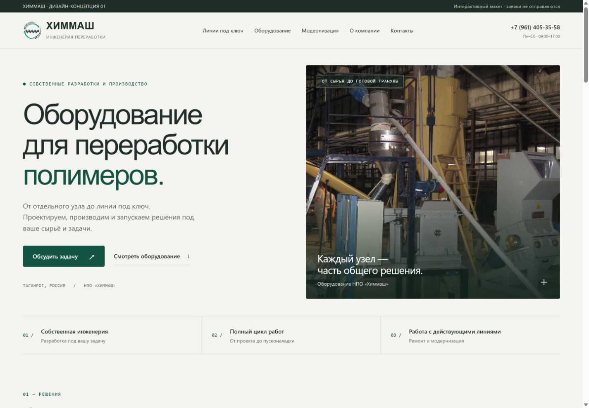

01 / Светлая инженерия
Спокойный и открытый
Светлый фон, глубокий зелёный, свободная композиция и мягкая типографика. Сдержанная подача с акцентом на понятность и диалог с инженером.
Два интерактивных направления для обновления сайта НПО «Химмаш». Сравните типографику, карточки, кнопки и подачу фотографий.
Оба варианта — интерактивные макеты для выбора дизайна. Категории, карточки и формы можно открыть. Заявки не отправляются. Первый вариант сохранён отдельно без изменений.